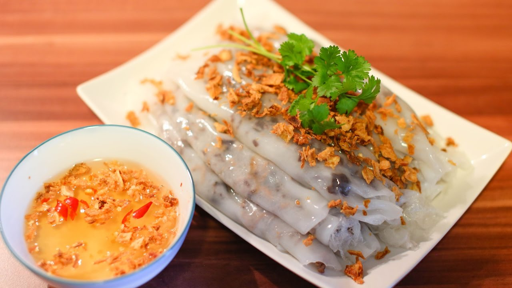

Việt Nam có văn hóa ẩm thực vô cùng đa dạng, mỗi vùng miền lại có những nét riêng vô cùng ấn tượng.
Nhắc tới ẩm thực miền Bắc không ai không biết đến những món đặc trưng sau đây:
1. Phở Hà Nội - món ăn nổi tiếng Thế giới
Phở không còn là món ăn nổi tiếng riêng của Việt Nam nữa mà hương vị của nó đã chinh phục được những người yêu ẩm thực trên toàn thế giới. Phở Hà Nội - một thương hiệu khi người ta nhắc đến miền Bắc.
Ra đời vào đầu thế kỷ 20, nơi xuất hiện đầu tiên ở Hà Nội. Phở thường là phở bò hay phở gà. Nước dùng cho nồi phở được ninh từ xương bò (xương lợn), sá sùng, kèm theo nhiều loại gia vị như: quế, hồi, gừng nướng, thảo quả, đinh hương, hạt mùi, hành khô nướng tạo nên hương vị đặc trưng riêng. "Bánh phở" theo truyền thống được làm từ bột gạo, tráng thành tấm mỏng rồi cắt thành sợi. Để thưởng thức được tô phở ngon tùy thuộc rất nhiều vào kinh nghiệm và bí quyết truyền thống của người chế biến, trong đó quan trọng đặc biệt là nồi nước dùng.
Phở bò Hà Nội mang đậm nét ẩm thực miền Bắc2. Bánh cuốn Thanh Trì
Nhắc đến các món ăn làm từ lúa gạo ngon đã tồn tại từ bao đời nay của người dân đất Hà Thành sẽ là một thiếu sót lớn nếu không nhắc đến bánh cuốn Thanh Trì. Ngôi làng ấy dường như đã đi sâu vào tiềm thức mỗi người bởi khi nhắc đến món bánh hấp dẫn này là người ta lại vô thức buột miệng nhắc tên món ăn hấp dẫn này.
Làm bánh cuốn cũng khá công phu, bột tráng bánh phải chọn loại gạo ngon, xay mịn như nước, từng lá bánh được tráng trên khuôn vải căng chụp trên nồi nước sôi. Mỗi lá bánh mỏng tang như tờ giấy, được thoa thêm một chút mỡ phi hành cho thơm. Khách ăn đến đâu, người bán khẽ bóc từng lá đến đấy như tách thứ lụa mỏng, mịn mỡ màng. Bánh cuốn không chỉ ngon và trông đẹp mắt, để thưởng thức trọn vẹn vị ngon của bánh cần có nước chấm. Nước chấm khéo pha với các loại nước mắm ngon, dấm nếp, thêm vài lát ớt tươi, giọt cà cuống và hành phi . Bánh có thể ăn kèm với chả quế, ruốc thịt, ruốc tôm hấp nóng trong một nồi nước. Mỗi đĩa bánh cuốn Thanh Trì với mươi lá mỏng là đủ một bữa điểm tâm thanh cảnh mà ngon lành.

Bánh cuốn Thanh Trì3. Bún chả
Cạnh phở thì bún chả cũng là món ăn ngon trong danh sách cứ đi xa Hà Nội là nhớ, và nếu có đặt chân tới thủ đô thì nhất định phải nếm thử.
Bún chả là món ăn với bún, chả thịt lợn nướng trên than hoa và bát nước mắm chua cay mặn ngọt. Món ăn xuất xứ từ miền Bắc Việt Nam, là thứ quà có sức sống lâu bền nhất của Hà Nội, nên có thể coi đây là một trong những đặc sản đặc trưng của ẩm thực Hà thành. Bún chả có nét tương tự món bún thịt nướng ở miền Trung và miền Nam, nhưng nước mắm pha có vị thanh nhẹ hơn.
Bún chả món ăn đặc trưng miền Bắc4. Bánh phu thê Đình Bảng - Bắc Ninh
Bánh phu thê là một loại bánh ngọt cổ truyền của Việt Nam. Đình Bảng là nơi gắn bó với phát tích của triều Lý và là nơi đầu tiên làm ra loại bánh này. Được gói bằng những tấm lá dong giản dị, rồi luộc lên, bánh phu thê không khoe mùi tỏa hương như bánh rán, bánh khúc. Chỉ tới khi bóc bánh đặt lên đĩa sứ người ta mới thật sự ngỡ ngàng. Dưới lớp bỏ bánh sắc vàng trong suốt, nhân bánh hiện ra. Ngoài đỗ xanh đãi sạch vỏ đã được hấp chín đánh tơi, người ta còn cho thêm đường trắng, cùi dừa, hạt sen và các hương ngũ vị.
Bánh phu thê Đình Bảng - Bắc Ninh5. Nem nắm Giao Thủy - Nam Định
Nhắc đến nét ẩm thực miền Bắc không thể thiếu được món Nem nắm Giao Thủy - thứ nem khiến người ta mê mẩn đến "quên cả lời em dặn dò".
Nem nắm Giao Thủy cầu kỳ ở khâu chế biến, được làm bằng thịt lợn nhưng đó phải là thịt nạc mông ngon, cùng mùi thơm chủ đạo của nem là thính. Thính được làm từ gạo tám thơm Hải Hậu bằng cách ngâm qua đêm, để ráo nước rồi đem rang đến khi gạo có màu vàng ngà rồi đem giã mịn. Món nem này làm mồi rượu vừa ăn, vừa uống không thấy chán.
Nem nắm Giao Thủy - Nam Định6. Bún đậu mắm tôm
Đặc sản miền Bắc ngon cực kỳ nếu bạn ăn được Bún đậu mắm tôm là món ăn dân dã đặc sản của miền Bắc. Bún đậu mắm tôm rất kén người ăn. Tuy nguyên liệu khá đơn giản, chỉ có bún tươi, đậu phụ rán, chả cốm, rau thơm nhưng ngon nhất là ăn bún đậu mắm tôm kèm nước chấm “mắm tôm” thần thánh không phải ai cũng ngửi và ăn được. Nhưng nếu bạn ăn và ngửi được thì sẽ bị nghiện luôn đấy. Hoặc nếu bạn không ăn được mắm tôm thì có thể yêu cầu đổi thành nước mắm chấm thường nha.
Bún đậu mắm tôm7. Phở cuốn
Nếu miền Nam có đặc sản gỏi cuốn thì Phở cuốn đặc sản miền Bắc cũng nổi tiếng như vậy. Cũng là nguyên liệu phở nhưng phở cuốn lại được tráng mỏng theo khổ vuông và chữ nhật. Phở cuốn được ăn kèm, cuốn cùng thịt bò chín, rau thơm, trứng chấm cùng nước chấm chua ngọt. Thường Phở cuốn đúng gốc đặc sản Hà Nội thì thường được ăn kèm tương ớt Hà Nội chua cay, không có vị ngọt.
Phở cuốn miền Bắc
BỮA CƠM NHÀ
Trong văn nền văn hóa ẩm thực Miền Bắc thì bữa cơm gia đình với những món ăn ngon hợp khẩu vị luôn là hương vị trong cuộc sống. Với hầu hết các chị em nội trợ gia đình ở Miền Bắc, mỗi ngày nên chuẩn bị những món ăn nào, lên thực đơn trong tuần cho cả nhà ra sao để vừa đảm bảo dinh dưỡng mà vừa giúp mọi người có những bữa cơm ngon miệng là việc không hề đơn giản.
Ẩm thực Việt Nam phong phú, đa dạng và có sự khác biệt theo vùng miền. Trong đó ẩm thực miền Bắc từ lâu đã nổi tiếng với cách chế biến cầu kỳ và mang hương vị đậm đà. Do vậy, khẩu vị ăn uống của người miền Bắc cũng có những nét đặc trưng riêng so với miền Trung và miền Nam. Cũng do sự khác biệt về địa lý, khí hậu nên bữa cơm miền Bắc có những món ăn mà chỉ miền này mới có, miền kia thì không, tương tự một số thực phẩm cũng vậy.
Thực đơn ngày 1:
1. Sườn xào chua ngọt
2. Canh bầu nấu ngao
3. Trứng cút om nấm
4. Tráng miệng: Bưởi
Thực đơn ngày 1
Thực đơn ngày 2:
1. Giá đỗ xào đậu thịt
2. Thịt bò xào mau muống
3. Canh nấm nấu thịt viên
4. Tráng miệng: Nhãn
Thực đơn ngày 2
Thực đơn ngày 3:
1. Canh rau mồng tơi nấu mướp
2. Đậu phụ hấp trứng
3. Thịt luộc
4. Tráng miệng: Táo
Thực đơn ngày 3
Thực đơn ngày 4:
1. Canh dưa chua nấu Tép
2. Gan xào cần tỏi
3. Thịt heo quay kho trứng
4. Tráng miệng: Thanh long
Thực đơn ngày 4
Thực đơn ngày 5:
1. Canh cá nấu măng
2. Thịt heo xào ngô ngọt
3. Bí nhồi thịt hấp
4. Tráng miệng: Nho
Thực đơn ngày 5
Thực đơn ngày 6:
1. Mực xào rau củ
2. Gà rán cay
3. Canh ốc chuối đậu
4. Tráng miệng: Chè bobochacha
Thực đơn ngày 6
Thực đơn ngày 7:
1. Gỏi đu đủ tôm thịt
2. Bún nem
3. Thịt cuốn sả
4. Tráng miệng: Hồng xiêm
Thực đơn ngày 7
Ẩm thực miền Bắc đòi hỏi sự kỹ càng, khéo léo, cầu kỳ trong cách chế biến và cách nêm nếm nên thường có những nét độc đáo riêng. Món ăn Bắc có vị thanh tao, không nồng gắt, không quá cay và thường đề cao độ tươi ngon tự nhiên của thực phẩm. Đừng bỏ qua những gợi ý trên đây để có thực đơn hàng ngày cho gia đình miền Bắc vừa dinh dưỡng vừa ngon miệng nhé!
CỖ TẾT
Từng vùng miền sẽ có các món ăn khác nhau tùy thuộc vào cách ăn uống của từng nơi. Mâm cỗ ngày Tết cũng vậy, người miền Bắc rất chú trọng đến các món ăn trong mâm cỗ mỗi dịp xuân về.
Mâm cỗ Tết miền Bắc thường có 4 bát, 4 đĩa tượng trưng cho tứ trụ, bốn mùa và bốn phương; cỗ lớn thì 6 bát, 6 đĩa hoặc 8 bát 8 đĩa tượng trưng cho phát lộc phát tài. Mâm cỗ Tết miền Bắc, đặc biệt là của người Hà Nội thường theo đúng nét cổ truyền của dân tộc, ví dụ như: đĩa xôi gấc đỏ tươi thể hiện mong ước được nhiều may mắn, thịt gà luộc phải là thịt gà trống thiến, canh bóng lợn và nấm, miến nấu lòng gà,...
Người miền Bắc thường rất coi trọng và cầu kỳ trong việc lựa chọn và chế biến mâm cỗ Tết. Các món ăn cũng được lựa chọn hợp với thời tiết lạnh dịp đầu xuân. Một mâm cơm điển hình không thể thiếu các món như bánh chưng, giò, thịt gà, nem, canh măng, dưa hành... được bày biện đẹp đẽ, tinh tươm. Mâm cơm thể hiện sự quây quần, đủ đầy, mong ước có một năm mới no đủ, thịnh vượng.
1. Bánh chưng
Nếu miền Trung và miền Nam có bánh tét thì miền Bắc có bánh chưng. Trên bàn thờ tổ tiên miền Bắc không thể thiếu được cặp bánh chưng xanh vuông vức và đẹp mắt. Bánh chưng được xem là linh hồn của ngày Tết cổ truyền, thể hiện tinh hoa đất trời qua bàn tay tạo dựng khéo léo của con người khi làm ra những chiếc bánh chưng ngon.
Bánh chưng được làm tự gạo nếp và phải chọn loại ngon nhất, thơm nhất để có thể chưng được lâu mà không làm mất hương vị của nó. Đặc biệt bên trong nhân bánh có thể là nhân mặn gồm: thịt, đậu xanh, hành khô, hạt tiêu hoặc nhân chay: đậu xanh, hạt điều. Khi gói phải thật chặt tay bánh mới có hình thù đẹp mắt, chắc chắn, sau khi nấu suốt 14 tiếng cần ép chặt bánh cho nước thoát ra để bánh được ngon. Hương vị bánh thơm lừng và bùi bùi, béo béo ăn cùng dưa muối rất hấp dẫn.
Bánh chưng miền Bắc2. Thịt nấu đông
Thịt nấu đông là món ăn chỉ có riêng vào mùa xuân ở miền Bắc. Khi tiết trời lành lạnh, thịt đông càng ngon hơn. Và đặc biệt trên mâm cỗ Tết ở Bắc càng không thể thiếu được món ăn thanh mát này.
Thịt nấu đông được làm từ thịt giò heo nấu chín nhừ cùng nấm hương, nấm mộc nhĩ tạo nên hương vị giòn giòn của nấm, béo ngậy của thịt giò. Sau khi nấu, người ta thường đem thịt ra ngoài trời đậy kĩ để món ăn uống sương và thu lấy cái rét lạnh từ đất trời. Hoặc bạn có thể cho thịt vào trong tủ lạnh để đông dần đều được nha. Món thịt đông trong veo, đẹp mắt được đặt trên mâm cúng thể hiện một năm mới an lành.
Thịt đông là món không thể thiếu trong mâm cỗ cúng miền bắc3. Xôi gấc
Theo quan niệm của người xưa, xôi gấc có màu đỏ thể hiện sự may mắn, hạnh phúc, đầy tài lộc cho nên vào dịp Tết trên mâm cỗ của người miền Bắc không thể nào thiếu được dãi xôi gấc hấp dẫn.
Xôi được nấu từ gạo nếp mềm dẻo, thơm lừng hòa quyện cùng thịt gấc đỏ mộng, ngọt thanh. Xôi sau khi được đồ chín tạo nên sắc màu tuyệt diệu cho ngày Tết thêm may mắn và mâm cúng thêm hấp dẫn.
Món cỗ miền Bắc thì không thể thiếu xôi gấc rồi!4. Canh măng giò heo
Măng khô mà người miền Bắc thường dùng để nấu canh là loại măng lưỡi lợn. Người ta chọn phần măng vừa mới nhú, xé ra phơi nhỏ có hình giống hình lưỡi heo rất đặc, chắc và không lo bị xơ. Măng sau khi đem ngâm nước, luộc và xả sạch, đem xào xơ qua cùng gia vị rồi đem ninh nấu cùng giò heo. Có thể thay thế bằng loại thịt khác như cổ, cánh và chân gà, nhưng ngon nhất vẫn là giò heo.
Một tô canh măng giò heo vừa có độ béo ngậy vừa phải của giò heo vừa có vị chua chua và thơm của măng đậm chất núi rừng. Mâm cỗ ngày Tết miền Bắc chắc chắn không thể thiếu được món ngon này rồi đó.
Món cỗ miền Bắc - Canh măng giò heo5. Nem rán
Nem rán là món ăn dễ chế biến, ăn ngon và rất được ưa chuộng. Vào ngày Tết trên mâm cỗ miền Bắc không thể nào thiếu được những chiếc nem rán giòn tan, nóng hôi hổi ăn vào kích thích không ngừng.
Nem rán được làm từ thịt heo, có thể thêm thịt cua hoặc tôm tùy theo ý thích. Ngoài ra, còn có thêm nấm một nhĩ, hành khô, giá, trứng, cà rốt, tiêu, gia vị… Tất cả được trộn đều rồi dùng bánh đa nem gói lại thành từng cuốn tròn xinh và đem rán chín vàng. Điều đặc biệt để làm tăng độ ngon của nem rán chính là phần nước chấm cần phải pha chế thật ngon, hài hòa giữa vị mặn của nước mắm cùng đường, chanh và tỏi ớt băm.
Mâm cỗ cúng miền Bắc là không thể thiếu Nem rán rồi!6. Giò lụa, giò thủ
Đối với người Việt Nam, đặc biệt là người miền Bắc trong các món nấu cỗ tuyệt không thể không có dĩa giò lụa và giò thủ.
Giò lụa thì được làm từ thịt heo xay nhuyễn, nêm nếm gia vị sau đó được gói trong lá chuối thành hình ống rồi buộc dây lạc và đem luộc, nhưng hấp sẽ ngon hơn nhiều. Những lát giò lụa thái mỏng đặt trên dĩa trắng ngà khiến mâm cúng thêm phần hấp dẫn.
Giò lụa - một trong các món ăn trong mâm cỗ cực kỳ quen thuộc
Còn giò thủ được làm thừ tai heo, thịt thủ, không xay nhuyễn mà được thái nhỏ rồi trộn cùng nấm mộc nhĩ và các loại gia vị. Đem xào chín và gói trong lá chuối như giò lụa, giò thủ được hấp cách thủy để tạo độ ngon. Sau khi đã chín, giò thủ có hình dáng đẹp mắt và hương vị ngon nhờ vị dai giòn sựt sựt của nấm, tai heo và beo béo của thịt thủ.
Ngày nay, người ta thường chọn mua giò lụa, giò thủ đã được làm sẵn nhưng chất lượng không chắc có được đảm bảo. Vậy nên bạn cũng có thể tự làm tại nhà và độ ngon không hề thua kém đâu nhé.
Giò thủ - một trong các món ăn trong mâm cỗ cực kỳ quen thuộc
CỖ CƯỚI HỎI
Đặc trưng vùng miền khác nhau dẫn đến văn hóa cưới hỏi khác nhau, trong đó thực đơn cỗ cưới là yếu tố thể hiện rõ rệt nhất. Cỗ cưới ba miền có nhiều điểm độc đáo riêng mà không phải cặp đôi nào cũng hiểu hết.
Theo thời gian và những luồng giao thoa văn hóa mới, thực đơn cỗ cưới của các vùng miền Việt Nam đã có nhiều thay đổi. Trong đó, mâm cỗ miền Bắc có lẽ là một trong những yếu tố có sự biến tấu rõ rệt nhất.
Thực đơn cỗ cưới truyền thống miền Bắc của ngày xưa
Ngày xưa, các món ăn đãi tiệc cưới của người miền Bắc khá đặc biệt so với các vùng miền, nhất là tại Hà Nội. Cỗ cưới xưa phải có đủ các món: Bóng cá sủ, súp yến, vi cá mới là sang trọng cầu kỳ. Ăn cỗ xong phải tráng miệng bằng bánh phu thê (bánh su sê) mới thật là xứng mặt đám cưới chốn kinh thành.
Còn chốn làng quê khi sắp cưới, gia đình hai bên chuẩn bị thực phẩm từ trước cả tháng để nấu cỗ cưới tại nhà. Lợn, gà, chim, cá… mua về sẽ được nuôi và vỗ béo, sau đó mới đem ra làm thịt đãi cả làng cả họ. Một con lợn sẽ làm được rất nhiều món khác nhau như: Lòng luộc, nem tai, giò lụa, canh chân giò…
Thậm chí có gia đình nuôi gà từ trước cả nửa năm, cho ăn ngô (bắp) để chắc thịt và dày da. Gà luộc lá chanh là món không thể thiếu trong bất kỳ buổi tiệc nào của người miền Bắc.
Mâm cỗ tiệc cưới ngày xưa của người miền Bắc thường là mâm 6 người, ăn từ sáng đến tối. Cứ vào đủ 6 người một mâm là chủ nhân buổi tiệc sẽ dọn hết toàn bộ thức ăn lên bàn để mọi người ai muốn ăn gì thì ăn, chứ không dọn theo thứ tự các món.
Phong tục cũng như thực đơn ngày cưới của người miền Bắc có những nét rất riêng và độc đáo
Thông thường, mâm cỗ cưới của người Hà Nội ngày nay phải đủ các món măng, bóng, chim ngói hoặc chim câu hầm, nấm thả, gà luộc lá chanh, chả quết hạnh nhân, nộm, xôi gấc… Đĩa xôi gấc cũng là một biểu tượng của tình yêu và hạnh phúc hôn nhân.
Màu đỏ của gấc làm mâm cỗ thêm đẹp, và biểu thị cho tình duyên bền lâu thắm mãi. Mỗi đĩa xôi lại phải có vài ba hạt gấc đen để chứng tỏ là gấc thật không phải xôi trộn phẩm màu! Hay như chiếc bánh phu thê, phải làm bằng bột nếp thanh sao cho bánh dẻo và giòn.
Mâm cỗ cưới miền Bắc tại các vùng ven vẫn còn vương nhiều nét truyền thống. Mọi người sẽ đãi tiệc tại nhà suốt nhiều ngày, cả làng cả xóm sẽ cùng tham gia nấu cỗ cưới.
Thực đơn cỗ cưới miền Bắc gồm:
- Khai vị: Súp gà ngô ngọt, súp măng tây, súp bí ngô kem nấm
- Món rán: Tôm bóc vỏ chiên trứng muối – Tôm hấp trái dừa
- Món cá: Cá quả phi lê sốt – Cá tầm nướng – Cá hấp xì dâu
- Món sốt, hầm: Thịt bò sốt tiêu đen – Bò lúc lắc – Chân giò hầm
- Món gà, chim truyền thống: Gà xối mỡ chiên da giòn – Chim câu sốt nước dừa – Chim quay – Gà luộc lá chanh
- Nộm: Nộm xoài – Nộm sứa – Nộm rau quả thập cẩm
- Món xào: Các loại rau xào theo mùa
- Món canh: Canh măng khô nấu mọc – Canh bóng – Canh mọc tôm
- Tinh bột: Xôi vò hạt sen, xôi gấc – cơm tám
- Tráng miệng: Caramen (bánh flan), hoa quả (trái cây)
Khi chọn thực đơn cưới miền Bắc bạn nên chọn các món thanh đạm, chú trọng vào hương vị gốc của món ăn thay vì nêm nếm quá nhiều gia vị. Thời tiệc miền Bắc cũng thay đổi rõ rệt theo mùa nên cặp đôi cũng nên chọn món hợp lý. Mùa Đông chọn súp, cháo hay lẩu nóng còn Hè thì món thanh đạm như gỏi, trái cây.